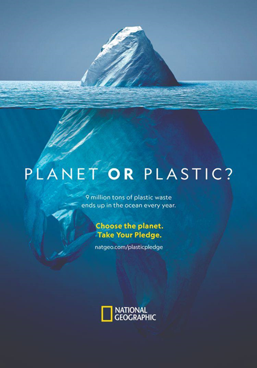

Мета соціального плакату – привернути увагу до певної соціальної проблеми або надати таку модель поведінки, яка може допомогти вирішити задану проблему. Основні завдання соціального плакату полягають у приверненні уваги до певної соціальної проблеми та наданні рішень для її вирішення.
Завдання соціального плакату:
- заохочення до певної дії або зміни поведінки глядача щодо соціальної проблеми;
- підвищення свідомості громадськості про певні соціальні проблеми та їх вплив на суспільство;
- стимулювання громадськості до активної участі в рішенні соціальних проблем, наприклад, шляхом залучення до діалогу, підпису петицій, пожертвувань тощо;
- популяризація ідей, цінностей та принципів, які сприяють вирішенню соціальних проблем та побудові громадянського суспільства;
- створення настрою та емоційного зв'язку з глядачем, що допомагає залучити його увагу до соціальної проблеми та спонукає до дії;
- поширення інформації про діяльність та досягнення соціальних організацій, що займаються вирішенням соціальних проблем;
- підтримка та популяризація соціальних рухів, ініціатив та проектів, спрямованих на вирішення соціальних проблем.